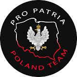

Kim był?
Krzysztof Kamil Baczyński (1921-1944) był wybitnym polskim poetą, zaliczanym do tzw. „Pokolenia Kolumbów”. Brał udział w Powstaniu Warszawskim jako żołnierz Armii Krajowej. Używał różnych pseudonimów, takich jak „Jan Bugaj”, „Krzysztof Zieliński”, „Piotr Smugosz”, „Emil” i „Jan Krzyski”. Urodził się 22 stycznia 1921 roku (lub 3 marca 1921 roku) w Warszawie. Data jego narodzin jest nieco niepewna, ale przyjmuje się tę podaną w wypisie z księgi parafialnej. Jego ojciec, Stanisław Baczyński, był krytykiem literackim, a matka, Stefania Zieleńczyk, nauczycielką. Oboje rodzice przekazywali młodemu Krzysztofowi miłość do ojczyzny i patriotyzm. Po urodzeniu Krzysztofa jego rodzice się rozwiedli, co mogło wpłynąć na jego zdrowie. Młody Baczyński był podobno chorowitym dzieckiem, cierpiał na astmę. W 1933 roku rozpoczął naukę w warszawskim Gimnazjum im. Stefana Batorego. Tam związał się z lewicową organizacją młodzieżową o nazwie „Spartakus” i używał pseudonimu „Emil”. To wtedy napisał swój pierwszy znany wiersz – „Wypadek przy pracy” (1936). Był średnim uczniem, a język polski w szkole nie był jego mocną stroną. Natomiast świetnie rysował, co stało się jego pasją. Jego talent artystyczny szybko się rozwijał. W 1939 roku zdał maturę, ale radość z zdanego egzaminu przyćmiła śmierć ojca, który zmarł 27 lipca. Planował studiować we Francji, ale wybuch wojny pokrzyżował te plany. Pozostał w Polsce i coraz więcej pisał. Tragiczne doświadczenia miały wpływ na jego charakter i twórczość. Jego wiersze zaczęły być coraz bardziej mroczne, nostalgiczne i metaforyczne. Najważniejszą osobą w jego życiu pozostawała matka.Życie podczas wojny
Mimo swoich żydowskich korzeni, Krzysztof Kamil Baczyński postanowił przeciwstawić się niemieckim władzom okupacyjnym, które nakazywały Żydom zgromadzenie się w getcie. Zamiast tego, pozostał po stronie aryjskiej. Pracował dorywczo, aby utrzymać siebie i matkę. Jednak 1 grudnia 1941 roku jego życie zmieniło się na zawsze. Poznał Barbarę Drapczyńską, z którą pobrał się 3 czerwca 1942 roku. Ich miłość silnie wpłynęła na poezję Baczyńskiego, a w jego wierszach można dostrzec odwołania do ukochanej Basi. Mimo trudnej rzeczywistości okupacyjnej, młodzi cieszyli się uczuciem. W czasie II wojny światowej Baczyński był aktywnym uczestnikiem polskiego ruchu oporu. Pomimo tego, rozwijał swoją pasję do liryki. Warszawscy literaci docenili jego talent, a władze podziemne udzieliły mu wsparcia finansowego. Baczyński uczestniczył także w tajnych kompletach, Harcerskich Grupach Szturmowych i konspiracyjnej Szkole Podchorążych Rezerwy. Choć kształcił się na Uniwersytecie Warszawskim, zdecydował się przerwać naukę na rzecz działalności konspiracyjnej. W 1943 roku wstąpił do batalionu „Parasol” i brał udział w akcjach bojowych organizowanych przez Polskie Podziemie. Poległ 1 sierpnia 1944 roku w czasie Powstania Warszawskiego, mając zaledwie 23 lata. Baczyński pozostawił po sobie ponad 500 wierszy, opowiadania i poematy. Jego twórczość, pełna metafor i barwnych epitetów, odzwierciedlała stan psychiki naznaczony wojną i cierpieniem. Stał się inspiracją dla kolejnych pokoleń twórców, a jego utwory były obecne także w muzyce. Tragicznym dopełnieniem śmierci Krzysztofa były losy jego ukochanej Barbary, która zginęła kilka dni po nim. Pośmiertnie został odznaczony Krzyżem Armii Krajowej i Medalem za Warszawę.Materiał wideo
Źródła
